Let P=
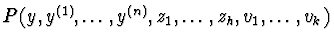
be a polynomial in the variables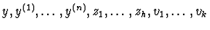
with coefficients in a differential ring R of functions. So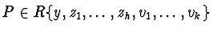
.Let zi= exp(Qi) and let vj= log(Rj), where Qi=
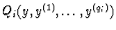
and Rj=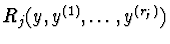
are polynomial functions with coefficients in the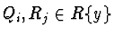
for all i and j. Moreover ord(Qi)=qi and ord(Rj)=rj for all i and j.
The ordinary differential equation
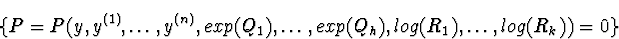
Since exp(a) (respectively log(a)) with a in a differential ring Rare uniquely defined by the differential equations { y(1)-a(1)y=0 } (respectively { ay(1)-a(1)=0 }) up to a constant, then the equation
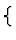
P=0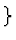
is equivalent to the systemwhere P(m) is the derivative of order m of P for all={ P= =0, P(1)=0,..., P(m)=0, zi= exp(Qi), vj= log(Rj), zi(1)= Qi(1)exp(Qi)= Qi(1)zi,
Rjvj(1)= Rj(1),,
,
},
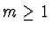
.
Let  be the following system of algebraic differential equations
be the following system of algebraic differential equations
with={ P= =0, P(1)=0,..., P(m)=0, zi(1)= Qi(1)zi, Rjvj(1)= Rj(1),
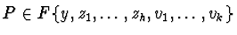
,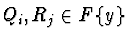
for all i and j.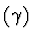
of algebraic ordinary differential equations in the same differential variables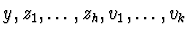
, that is equivalent to